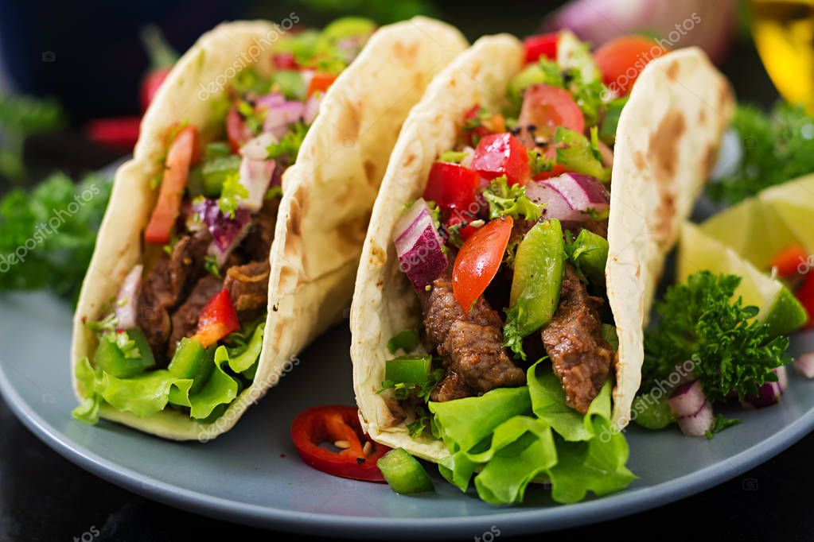

Tacos

Spicy, tangy, sweet, this recipe for steak tacos brings all the flavors to
the table.
Ingredients List
- 1 cup chopped onion
- ½ cup chopped fresh cilantro
- 3 limes, juiced
- 4 tablespoons soy sauce
- 2 tablespoons olive oil
- 4 teaspoons dark brown sugar/li
- 2 teaspoons dried oregano
- 1 ½ teaspoons red pepper flakes
- 1 clove garlic, minced
-
1 pound skirt steak, fat removed and flattened to 1/8-inch thickness
- 4 corn tortillas
Steps
-
Step 1 Combine onion, cilantro, lime juice, soy sauce, olive oil, brown
sugar, oregano, red pepper flakes, and garlic in a large bowl.
-
Step 2 Place steak in a baking pan and pour marinade on top. Cover and
refrigerate at least 1 to 4 hours.
-
Step 3 Preheat an outdoor grill for high heat and lightly oil the grate.
-
Step 4 Grill steak 2 to 4 minutes per side, to desired doneness. Allow
meat to rest 5 to 10 minutes before slicing against the grain into
1/4-inch slices./li>
- Step 5 Add meat to tortillas and top with your favorite toppings.
Return to main page